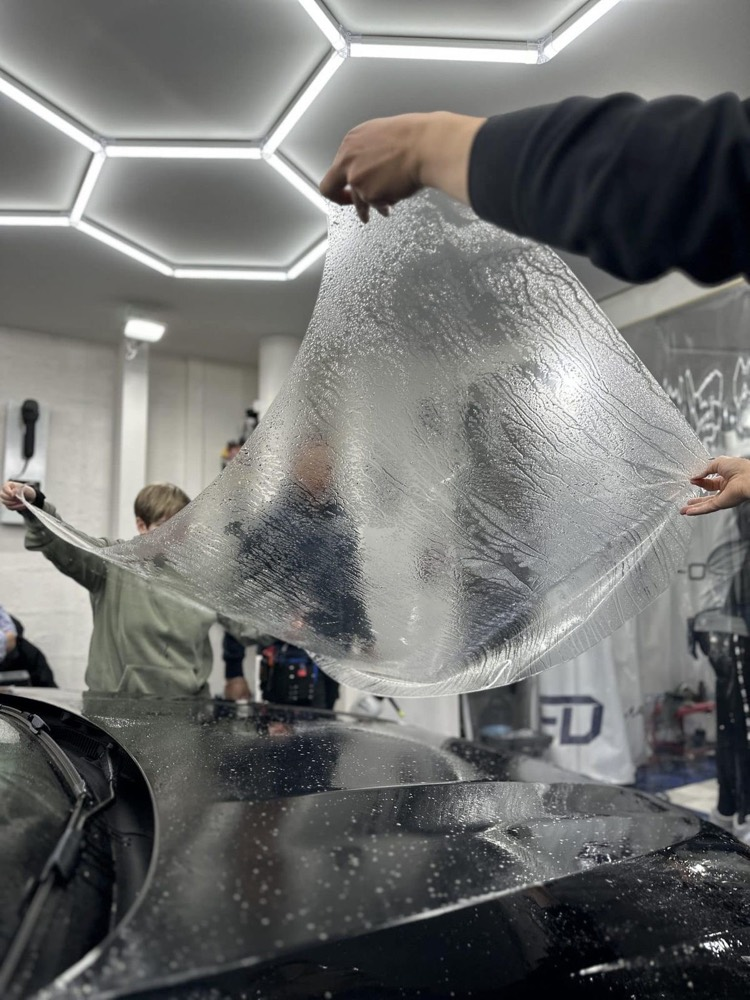
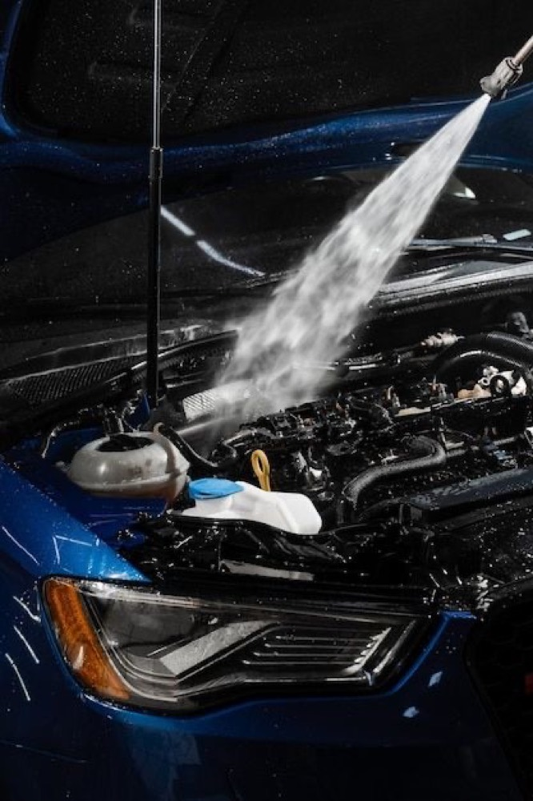

Polimento técnico
Corte e refino com politriz para remover microrriscos, hologramas e marcas de lavagem malfeita. Medição de camada de verniz antes de cortar.
- Box1 a 2 dias
- IndicadoPintura opaca ou riscada
Chapecó · SC — Jardim América
Polimento técnico, vitrificação e proteção de pintura feitos por uma pessoa só, um carro por vez. Arraste a imagem e veja a diferença entre uma pintura lavada e uma pintura corrigida.

O que entra no box
Agrupados pelo que realmente muda na decisão: o que corrige a pintura, o que protege o que foi corrigido, e o que recupera o resto do carro.
Remove o defeito. Feito antes de qualquer proteção — proteger uma pintura riscada só sela o risco.
Corte e refino com politriz para remover microrriscos, hologramas e marcas de lavagem malfeita. Medição de camada de verniz antes de cortar.

Tira o amarelado e a opacidade da lente. Volta a iluminar de verdade à noite — e some com aquele ar de carro velho na frente.
Sela o resultado. Define por quanto tempo o carro continua parecendo recém-saído do box.

Camada cerâmica sobre o verniz. Dá profundidade de cor, facilita a lavagem e segura o brilho por anos em vez de semanas.
O efeito que se vê na chuva: a água vira esfera e leva a sujeira embora. É o resultado visível da vitrificação funcionando.

Película transparente que recebe a pedrada no lugar da pintura. Indicada para capô, para-choque e colunas de quem roda em estrada.

Proteção de manutenção, com brilho quente e aquele toque liso. Boa opção entre uma vitrificação e outra.

Menos calor dentro do carro, menos desbotamento no painel e nos bancos. Aplicação dentro da faixa permitida por lei.
O carro não termina no verniz. Interior, motor e detalhes mudam o quanto ele parece cuidado por dentro.

Extração profunda em bancos, carpete e forros. Tira sujeira impregnada, odor e a mancha que o aspirador não resolve.

Limpeza com produto específico e hidratação. Mantém a maciez e evita o ressecamento que vira trinca lá na frente.

Método dos dois baldes, descontaminação e secagem sem arrastar sujeira. É a lavagem que não cria o risco que o polimento depois tira.

Desengraxe com proteção dos componentes elétricos. Facilita enxergar vazamento e valoriza na hora da venda.
Como funciona
Aqui a ordem importa de verdade — cada etapa só existe porque a anterior foi feita.
Você manda fotos pelo WhatsApp ou passa no box. Eu olho o estado do verniz e digo o que o carro precisa — e o que não precisa.
Data reservada só para o seu carro. Como é um por vez, o box não fica dividido entre três serviços no mesmo dia.
Lavagem, descontaminação, correção e proteção, nessa ordem. Sob luz de inspeção, que é onde o defeito aparece.
Fotos do antes e depois e orientação de manutenção: como lavar para o resultado durar o que tem que durar.
Quem já passou pelo box
Mensagens recebidas depois da entrega, do jeito que chegaram.
Sempre um cuidado imenso com o cliente, cuida do veículo como fosse seu, detalhista, capricho nem se fala, muito obrigado pelo cuidado do meu carro!
Então mano, venho agradecer pelo serviço, qualidade. Fiquei muito satisfeito com teu trabalho. Sucesso!
Seu feedback ajusta o serviço. Depois da entrega, me conte o que deu certo e o que dá para melhorar.